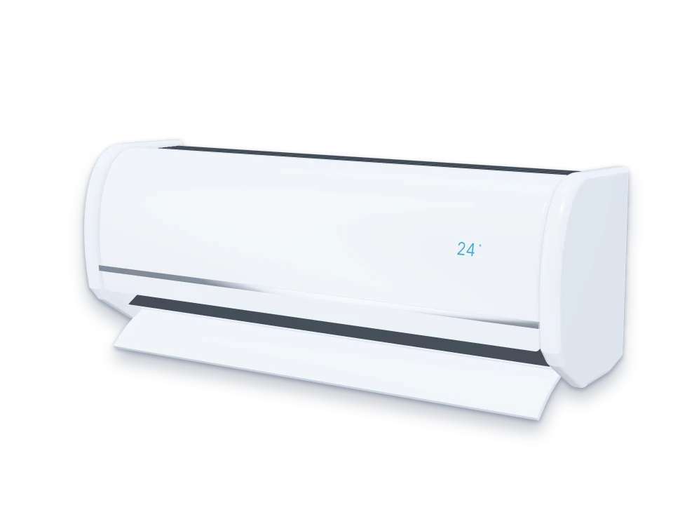
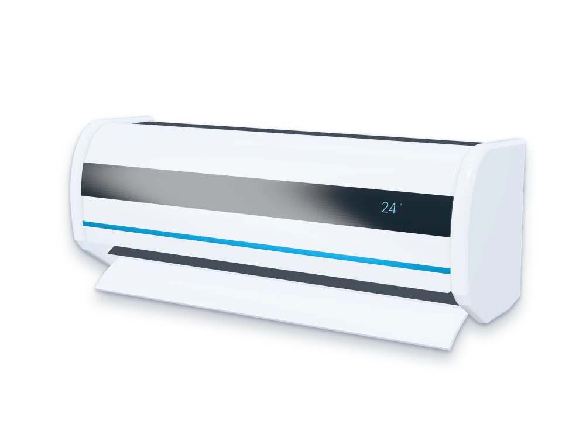
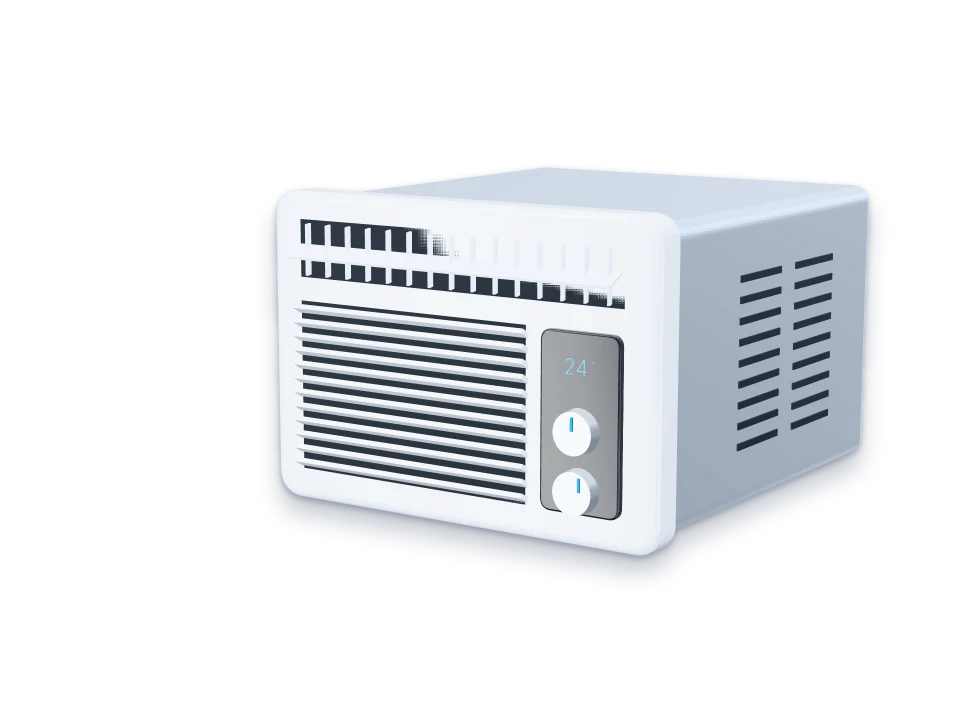
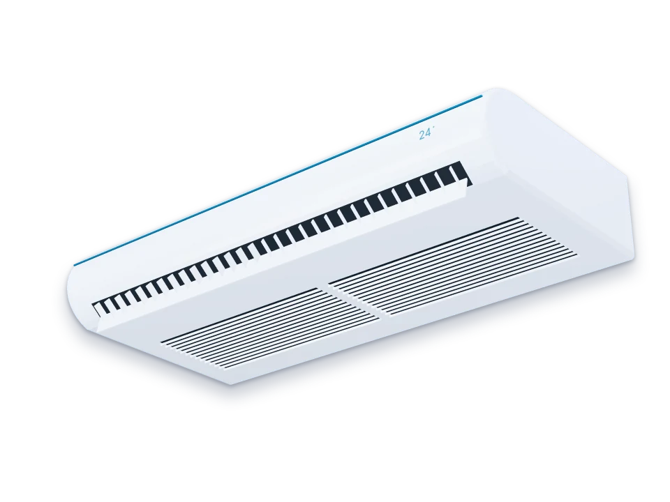
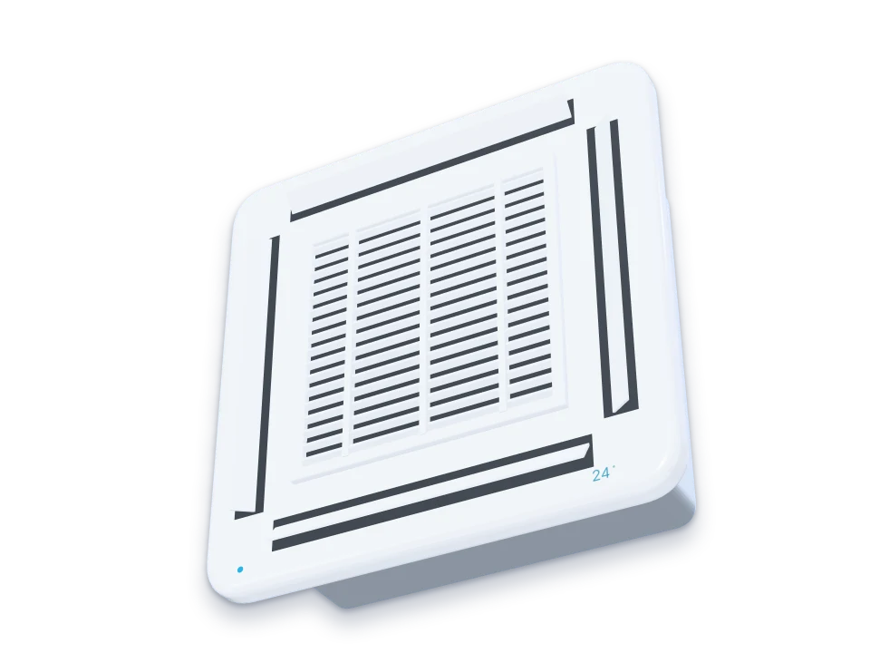

Tampa
A frente do aparelho. Ela levanta para você alcançar os filtros, sem ferramenta.
Loja de demonstração: produtos e preços fictícios
Descubra quantos BTUs o seu ambiente pede,
compare modelos e veja o preço já com a instalação.
O ar do quarto entra por cima, passa por quatro peças e sai gelado por baixo. Saber o que cada uma faz ajuda a cuidar do aparelho.
A frente do aparelho. Ela levanta para você alcançar os filtros, sem ferramenta.
Seguram a poeira antes de o ar chegar à serpentina. Filtro sujo reduz a passagem do ar e prejudica o resfriamento.
Tubos de cobre com o gás frio, cercados de aletas de alumínio. É aqui que o ar perde calor.
Um cilindro de pás que gira e empurra o ar gelado para o ambiente, pela saída de baixo.
Do tamanho do cômodo ao pedido de visita, tudo acontece aqui. Nada é cobrado nem enviado de verdade.
Diga o tamanho do cômodo, quantas pessoas ficam nele e se bate sol da tarde. O site mostra a conta linha por linha e já sugere modelos.
Filtre por BTU, tipo, tensão e preço. Marque "Comparar" em até 3 modelos para vê-los lado a lado.
Aperte "Adicionar ao orçamento" no modelo escolhido. Na tela Orçamento, some a instalação, veja as parcelas e teste o pedido de visita.
[ a regra, a instalação e os juros antes de você decidir ]
A regra do cálculo fica escrita na tela, junto do aviso de que o resultado é uma estimativa. O valor da instalação sai por tipo de aparelho e por metro de tubulação.
A taxa, o valor de cada parcela e o total pago aparecem juntos.
Ver o orçamentoO melhor tipo depende do ambiente, do forro e de quantas horas o aparelho fica ligado.





SplitDe parede
Instalação básica de exemplo: R$ 450
Vai na parede, com uma unidade fora do ambiente. Serve bem a quartos e salas de uso comum.
Isto é uma estimativa. A regra não enxerga tipo de telhado, isolamento, janelas grandes nem a circulação do ar. Antes de comprar, um técnico precisa ver o ambiente.
Informação geral. O manual do aparelho e o técnico que vê o local têm a palavra final.
BTU é uma unidade de energia térmica. No ar-condicionado, o número indica quanto calor o aparelho consegue retirar do ambiente por hora. Por isso o certo é BTU por hora, embora quase todo mundo fale só BTU.
Não. É uma regra prática de mercado, boa para chegar a uma primeira estimativa. O resultado muda com telhado, isolamento, tamanho das janelas e direção do sol. Por isso a escolha final deve passar por um técnico.
O compressor convencional funciona em liga e desliga. O Inverter varia a velocidade e ajusta a potência conforme a necessidade, o que mantém a temperatura mais estável e costuma deixar o funcionamento mais silencioso.
Mais distância pede mais tubo, isolamento e mão de obra, e pode exigir carga adicional de gás. Cada fabricante define no manual a distância máxima e o desnível permitidos entre as unidades.
Muitos manuais pedem limpeza a cada duas a quatro semanas em uso frequente. Em períodos de seca, com mais poeira e fumaça, o filtro suja mais rápido. Filtro sujo reduz a passagem do ar e prejudica o resfriamento.
Não. O gás circula em um sistema fechado e não se gasta com o uso. Se está faltando gás, provavelmente há vazamento, que precisa ser encontrado e consertado antes da recarga.
Marcas, modelos e preços inventados para esta demonstração. Aperte "Adicionar ao orçamento" no modelo que quiser, ou marque "Comparar" em até 3 modelos para vê-los lado a lado. Os filtros ajudam a achar o aparelho certo para o seu BTU.
Nenhum modelo atende a esses filtros. Tire um filtro ou amplie a faixa de preço.
Aperte os botões + e − ou digite os números do seu cômodo, como em um controle remoto. O visor mostra na hora quantos BTUs (a medida da potência do ar-condicionado) o ambiente pede, e os modelos que servem aparecem no fim da página.
Total estimado
Isto é uma estimativa. A regra não enxerga tipo de telhado, isolamento, janelas grandes nem a circulação do ar. Antes de comprar, um técnico precisa ver o ambiente.
Deslize a tabela para o lado para ver todos os modelos.
Aqui ficam os aparelhos que você escolheu. Inclua a instalação, escolha em quantas vezes pagar e, se quiser, teste o pedido de visita. Todos os valores são exemplos e nada desta página é enviado a ninguém.
O orçamento está vazio. Calcule o BTU para ver sugestões ou escolha no catálogo.
O valor base inclui até 3 m de tubulação. Cada metro além disso é somado.
| Tipo | Base | Metro extra |
|---|
Nada é enviado de verdade. Este formulário só testa a validação na sua tela e não guarda o que você digitar. Use dados de mentira.
Informação geral. O manual do aparelho e o técnico que vê o local têm a palavra final.
BTU é uma unidade de energia térmica. No ar-condicionado, o número indica quanto calor o aparelho consegue retirar do ambiente por hora. Por isso o certo é BTU por hora, embora quase todo mundo fale só BTU.
Não. É uma regra prática de mercado, boa para chegar a uma primeira estimativa. O resultado muda com telhado, isolamento, tamanho das janelas e direção do sol. Por isso a escolha final deve passar por um técnico.
Você paga mais na compra e na instalação sem ganho de conforto. Em aparelhos convencionais, o excesso faz o compressor ligar e desligar em ciclos curtos, o que retira menos umidade do ar.
Ele pode não alcançar a temperatura escolhida nas horas mais quentes e tende a trabalhar perto do limite por muito tempo, o que aumenta o consumo e o desgaste.
O compressor convencional funciona em liga e desliga. O Inverter varia a velocidade e ajusta a potência conforme a necessidade, o que mantém a temperatura mais estável e costuma deixar o funcionamento mais silencioso.
Costuma ser mais eficiente, principalmente em uso prolongado, mas a diferença depende do modelo, do dimensionamento e de quantas horas ele fica ligado. Para comparar aparelhos reais, confira a etiqueta de eficiência do Inmetro de cada um. Os produtos desta demonstração são fictícios e não têm etiqueta.
Mais distância pede mais tubo, isolamento e mão de obra, e pode exigir carga adicional de gás. Cada fabricante define no manual a distância máxima e o desnível permitidos entre as unidades.
Confira antes se a tensão do aparelho combina com a do local, porque 127 V e 220 V não são intercambiáveis. Muitos aparelhos pedem circuito próprio, com disjuntor e fiação dimensionados. Um eletricista qualificado deve avaliar a instalação.
Muitos manuais pedem limpeza a cada duas a quatro semanas em uso frequente. Em períodos de seca, com mais poeira e fumaça, o filtro suja mais rápido. Filtro sujo reduz a passagem do ar e prejudica o resfriamento.
Sim, de tempos em tempos. Uma referência comum é ao menos uma vez por ano, ou antes disso se houver mau cheiro, pouco ar ou gotejamento. O técnico limpa serpentina, turbina, bandeja e dreno, e verifica a unidade externa.
Não. O gás circula em um sistema fechado e não se gasta com o uso. Se está faltando gás, provavelmente há vazamento, que precisa ser encontrado e consertado antes da recarga.
As causas comuns são dreno entupido ou sem caimento, e filtro muito sujo, que pode formar gelo na serpentina. Desligue o aparelho, limpe o filtro e, se continuar, chame um técnico.
A Friagem não existe. Este site é uma demonstração do que uma loja de ar-condicionado pode ter: marcas, modelos, preços e valores de instalação são inventados, e nada é vendido, cobrado ou enviado de verdade.
O site é feito de arquivos simples: HTML para a estrutura, CSS para a aparência e JavaScript para as contas. Tudo roda no seu navegador, sem servidor e sem serviços de terceiros.
Orçamento, comparação, filtros e valores da calculadora ficam guardados no próprio navegador, no recurso chamado localStorage (uma memória local que só o seu navegador lê), para não sumirem quando a página recarrega. O formulário de visita não guarda nem envia nada.
index.html e o JavaScript mostra uma de cada vez conforme o endereço (#/catalogo, #/calculadora e assim por diante).js/dados.js (catálogo, valores de instalação, juros e constantes da regra), js/logica.js (as contas, sem nada de tela) e js/app.js (telas, filtros, carrinho, formulário e rotas).textContent, nunca como HTML montado em texto.localStorage. O site continua funcionando se o localStorage estiver bloqueado ou corrompido.tests/fluxos.js, cobrindo computador e celular, contraste, acessibilidade e os cálculos.Toshiro01001/ar-condicionado.